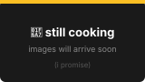

Projects
The longer version of what I'm working on and have built over the years.
Open Source
In the last months, i didn't contribute much to open source projects, sadly :(. Yet i kept learning and building new things
Most of my work these days is on private repos, especially for: High School things, jobs for other places i come by and also personal projects that are just stubs or aren't yet useful to be published (i know it might sound dumb). The public repos you see on my GitHub are mostly older projects and experiments i built years ago (2020ish-2024)
I'd like to come back and help with FOSS as soon as i can once i get a bit of free time.
BananaWiki (2026)
BananaWiki is a platform i built between February and May 2026, based on Flask it lets people create their own wiki, with their own content, decide to keep it private or public with a full user management system with roles and plugin support with built-in ones (such as one to create mind maps and graphs, one to organize tasks in a Kanban style and various other features)
The project isn't quite ready yet but you can take a look at it on its page, it will likely be made open source in the following months with also a hosted free version with a Hosting Platform where users can sign up and get their managed instance up in seconds for free with ease
I was also able to get this project approved by my school as a PCTO (School-Work Program)
Wicked Agent
Inspired by Devin AI, i wanted to build an open source, cloud based (hostable on a VPS server) coding agent that used a custom or local LLM on the server (Ollama or any OpenAI-compatible API) and worked with an asynchronous design, you could assign it a task, close the site, come back some time later and get the result.
I started researching because i really like OpenCode but it has the minor downside of requiring your device to always be on and the major downside that sometimes it stops without actually finishing its assigned task. Devin solves that issue but it remains a paid tool with very tight usage limits, the idea is to be as open as OpenCode but as dynamic and functional as Devin. Hence Wicked Agent (because yes, it's wicked, it's evil!)
It will be released as an experiment in the coming months as soon as i can figure out a few things and i get more time to work on it
Unnamed Engine
I've always been obsessed, at least since 2019-2020 about game engines and how games work, i never worked on any serious game i published. At the time i didn't and likely still today don't have the capabilities to work on 3D graphics, OpenGL takes time to learn and i never started.
(Yes, i did create a few simple games in the last months or a basic rendering system but it takes more time to master and actually create something meaningful. There are tons of better developers out there in this field)
Maybe in future i might build a very simple concept of a game engine, nothing too crazy, maybe 2D, maybe 3D but only time will tell
Older Projects
Various Emulators for Teachers (Sep-Dec 2025)
At school, i worked internally for a while on building a small web-based 3D simulator for mechanical events such as Material Twisting, Material Bending, Shearing, Stretching, etc... After all, i'm in a Mechatronics High School
Redditzilla (2025)
This was a project for a friend that ended up getting abandoned by both of us. He started creating videos that were Reddit posts with comments scrolling by (telling some kind of "story") with at the same time a generic video in the background (eg: Minecraft Parkour), a lo-fi music track and a TTS voice reading what was going on
The tool worked well, i let it run on a VPS for a night to generate around 300 videos. We published none though, as this was just an experiment and we decided to stop at that point without the need of polluting the already polluted web
I was mainly inspired by this tool that i personally still think is really cool as a concept but don't expect to print millions with it. For that you can try something like getting a job or something
Empty Character (2021)
A basic empty character app I published in 2021 by using a modified version of the AI2 App Engine. Nothing too big but i took care of it. I rewrote the engine in 2023 (basic) and wrote a bit about its story. You can find it on its dedicated site (maybe a bit too much for an app like this but okay) and on the Play Store.
The project is open source and free. Due to its basic nature, it's maintained by me but hasn't been updated since 2024.
Phone Credit App (2020)
I'll try not to go too much into detail here as this project operated in a gray zone but, in 2020, a well known phone provider that came to Italy in 2018 didn't have an app (as of 2026 they did finally create one in 2025)
I built an unofficial alternative client app that auto-authenticated users on the site by detecting if they were using the SIM card, i had a Google Play Developer Account and decided to publish it
The app was actually pretty simple, as it allowed users to check their credit balance and other basic information such as data usage or call count.
The application was launched on 12 April 2020 (mostly sure) and it grew in the following weeks and months at an impressive rate. In May 2020 it reached its peak at around 26,000 total installs (unique installs probably) and around 2,000 daily users.
It's still a mystery to me why there were so many installs but so few daily users but you must understand that i was far from surprised at the time (i was almost 12), also the fact that i received around 30 reviews per day (almost all positive) was amazing to me at the time.
The story ended in August 2020 after Google updated the policy regarding linking third party sites in apps and that led to the app being delisted. It yet remains a fun story i like to remember and this is what brought me to the tech i'm building today
A note to those in power: If the fact that this last story is here bothers you, I'd much rather you'd shoot me an email rather than shoot me in real life. Thanks! (Also next time learn a thing or two about this thing called Freedom of Expression)
Before the Credit App i did do small experiments such as VBS scripts on Windows that optimized the user's computer by for example purging temp files but at the time i was too inexperienced to build anything meaningful
During the pandemic i tried developing simple games and i had a nice time doing it, however nothing was published
